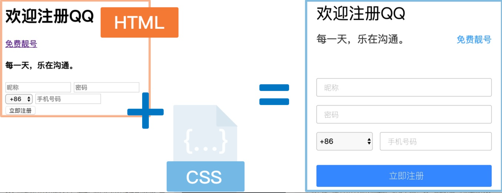
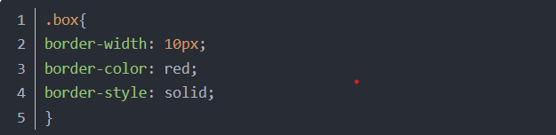
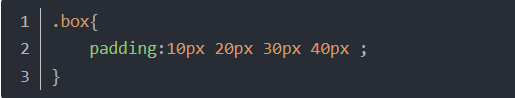
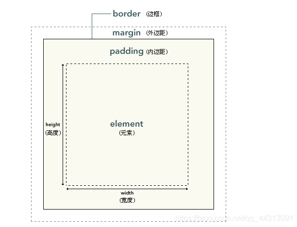

前端之美
概述--什么是前端开发
前端开发是创建Web页面或app等前端界面呈现给用户的过程，通过HTML，CSS及JavaScript以及衍生出来的各种技术、框架、解决方案，来实现互联网产品的用户界面交互。它从网页制作演变而来，名称上有很明显的时代特征。
在互联网的演化进程中，网页制作是Web1.0时代的产物，早期网站主要内容都是静态,以图片和文字为主，用户使用网站的行为也以浏览为主。随着互联网技术的发展和HTML5、CSS3 的应用，现代网页更加美观，交互效果显著，功能更加强大。但其主要职能始终是把网站的界面更好地呈现给用户。
以前会Photoshop和Dreamweaver就可以制作网页，随着网站开发难度加大、开发方式多样,网页制作更接近传统的网站后台开发,网页制作更多被称为Web前端开发。前端技术包括4个部分:前端页面设计师、浏览器兼容、CSS、 HTML"传统"技术与Adobe AIR、Google Gears,以及概念性较强的交互式设计，艺术性较强的视觉设计等。
2005年以后，互联网进入Web2.0时代，各种类似桌面软件的Web应用大量涌现，前端由此发生了翻天覆地的变化。网页不再只是承载单一的文字和图片，各种富媒体让网页的内容更加生动，网页上软件化的交互形式为用户提供了更好的使用体验,这些都是基于前端技术实现的。 随着手机成为人们生活中不可或缺的一部分，成为人们身体的延伸,人们迎来了体验为王的时代。移动端的前端技术开发前景宽阔。
前端三把斧
HTML、CSS和JavaScript一起被众多网站用于设计网页、网页应用程序以及移动应用程序的用户界面。
下面给出三种语言的介绍：
- 1.什么是HTML
- 超文本标记语言(英语: HyperText Markup Language,简称:HTML)由物理学家蒂姆伯纳斯-李提出并创建，是-种用于创建网页的标准标记语言。HTML描述了-个网站的结构，是-种标记语言而非编程语言。
- 一个HTML元素是HTML文件的一个基本组成单元,是构建网站的基石。HTML允许嵌入图像与对象，并且可以用于创建交互式表单，它被用来结构化信息，使文本在文档中具有不同的含义一例如标题、段落和列表等等,也可用来在-定程度上描述文档的外观和语义。
- 浏览器使用HTML标签(即《HTML》 )和脚本(JavaScript) 来诠释网页内容，但不会将标签显示在页面上。
- 2.什么是CSS
- 你是否想让自己的网页变得更美观呢？下边我们就要为你隆重介绍CSS！ 
- CSS，即层叠样式表(英语: Cascading Style Sheets,缩写: CSS;又称串样式列表、级联样式表、串接样式表、阶层式样式表)，是一种用来为结构化文档(如HTML文档或XML应用)添加样式(字体、间距和颜色等)的计算机语言，它的主要职能就是确定布局和元素的表现。
- CSS不能单独使用，必须与HTML或XML一起协同工作，为HTML或XML起装饰作用。其中HTML负责确定网页中有哪些内容，CSS确定以何种外观(大小、粗细、颜色、对齐和位置)展现这些元素。CSS可以用于设定页面布局、设定页面元素样式、设定适用于所有网页的全局样式。
- CSS的出现使得页面的内容和样式得以分离，HTML文件中只包含结构和内容的信息，CSS文件中只包含样式的信息，这样做既可以简化HTML文件，又使CSS文件更易维护。
- 3.什么是JavaScript
- JavaScript (通常缩写为JS)是-种高级的、解释型的编程语言,它能使网页可交互(例如拥有复杂的动画，可点击的按钮，通俗的菜单、表单验证、页面特效、操作页面元素等) ,常用来为网页添加各式各样的动态功能，为用户提供更流畅美观的浏览效果。
- JavaScript支持面向对象编程，命令式编程，以及函数式编程。它提供语法来操控文本、数组、日期以及正则表达式等。它已经由ECMA(欧洲计算机制造商协会)通过ECMAScript实现语言的标准化
HTML元素的结构
- HTML标签有以下特点：
- 1.由尖括号包围关键词组成，比如:< p >、< h1 >、 < div >、< span >等;
- 2.通常成对出现，比如< div >和< /div >, 第一个就是开始标签,第二个就是结束标签，要注意开始标签和结束标签的区别在于，结束标签比开始标签多-个"/";
- 3.虽然标签通常是成对出现的，但并不是所有标签都有对应的结束标签，比如< input > 、< img > 等，它们往往是单独呈现的;
- 设置元素盒子的边框
- 设置边框 
- 设置盒子的内边距
- 设置盒子的外边距
border-xxx: 可以单独设置四个边的样式，规则和border一样，只不过只对一个边生效
内边距（padding），指的是盒子的内容区和盒子边框之间的距离，一共有四个方向的内边距，可以通过padding-top、padding-right、padding-bottom、padding-left来设置四个方向的内边距。内边距会影响盒子的可见框的大小，元素的背景会延伸到内边距，盒子的大小由内容区、内边距和边框共同决定。
使用padding可以同时设置四个边框的样式，规则和border-width一致
外边距（margin），指的是当前盒子与其他盒子之间的距离，他不会影响可见框的大小，而是会影响到盒子的位置。盒子有四个方向的外边距：margin-top、margin-right、margin-bottom、margin-left；由于页面中的元素都是靠左靠上摆放的，所以注意当我们设置上和左外边距时，会导致盒子自身的位置发生改变，而如果设置右和下外边距时会改变其他盒子的位置。
盒模型
CSS处理网页时，它认为每个元素都包含在一个不可见的盒子里。为什么要想象成盒子呢？因为如果把所有的元素都想象成盒子，那么我们对网页的布局就相当于摆放盒子。我们只需要将相应的盒子摆放到网页中相应的位置即可完成网页的布局。
一个盒子我们会分成几个部分：内容区、内边距、边框、外边框。
